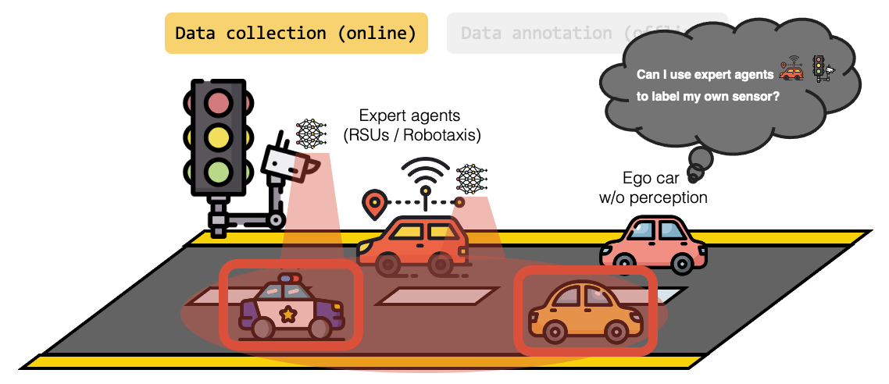
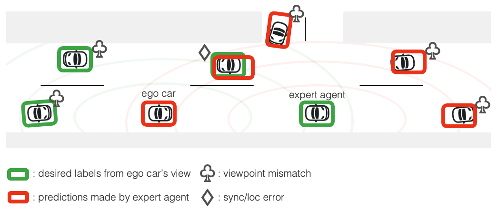
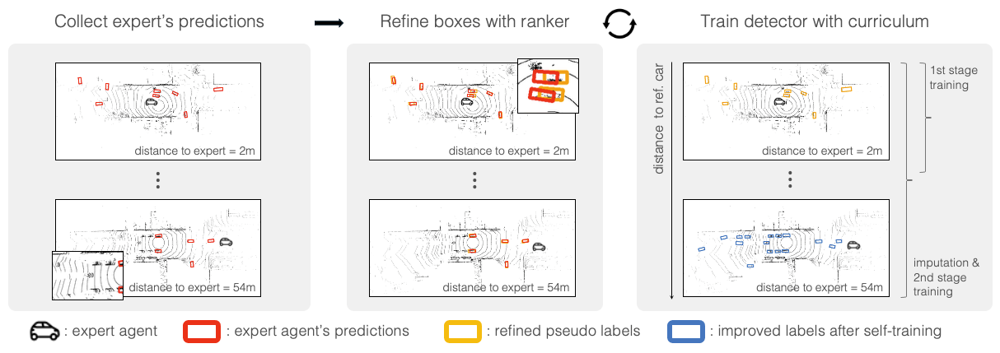

3D detection relies on massive, high-quality labeled data — and labeling must be repeated for new cities, sensors, or platforms (e.g., San Francisco → Paris, Velodyne → Cepton).
Can we reuse existing expert perception sources — like robotaxis or RSUs — to train ego vehicles for label-efficient learning?


The ego vehicle first receives predictions from expert agents, which inevitably contain noise. It refines their localization with our label-efficient box ranker, then applies a distance-based curriculum to generate high-quality pseudo labels for self-training.
📄 See the paper for details!
📄 See the paper for full experimental details!
@article{yoo2024rnbpop,
title={Learning 3D Perception from Others' Predictions},
author={Yoo, Jinsu and Feng, Zhenyang and Pan, Tai-Yu and Sun, Yihong and Phoo, Cheng Perng and Chen, Xiangyu and Campbell, Mark and Weinberger, Kilian Q. and Hariharan, Bharath and Chao, Wei-Lun},
journal={arXiv preprint arxiv:2410.02646},
year={2024}
}